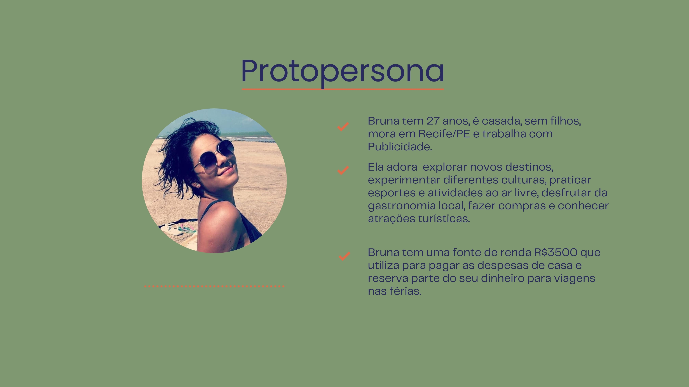
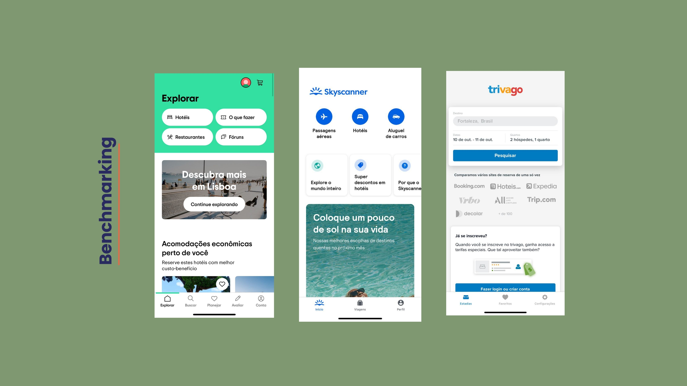
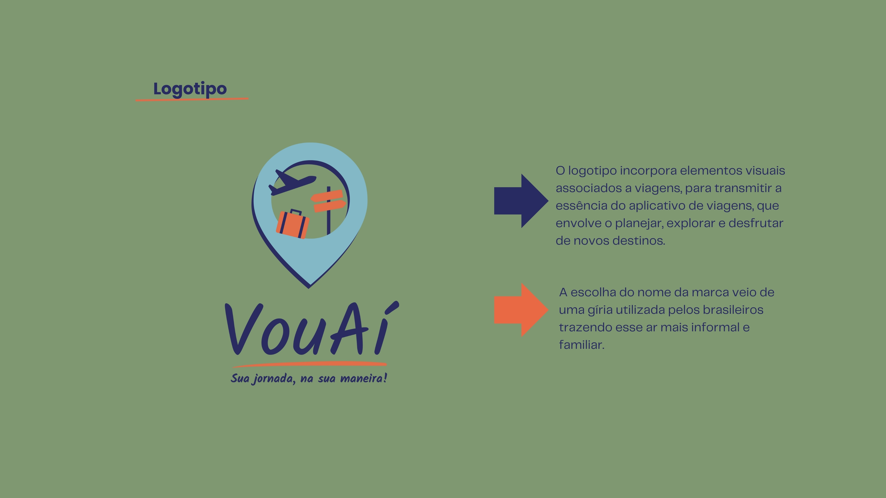
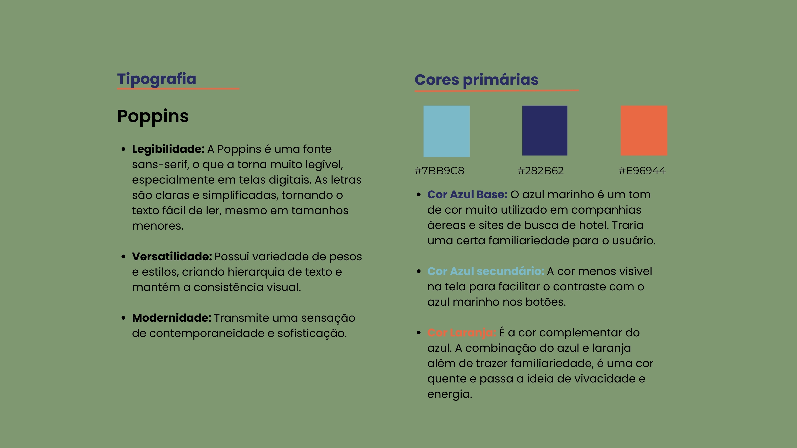
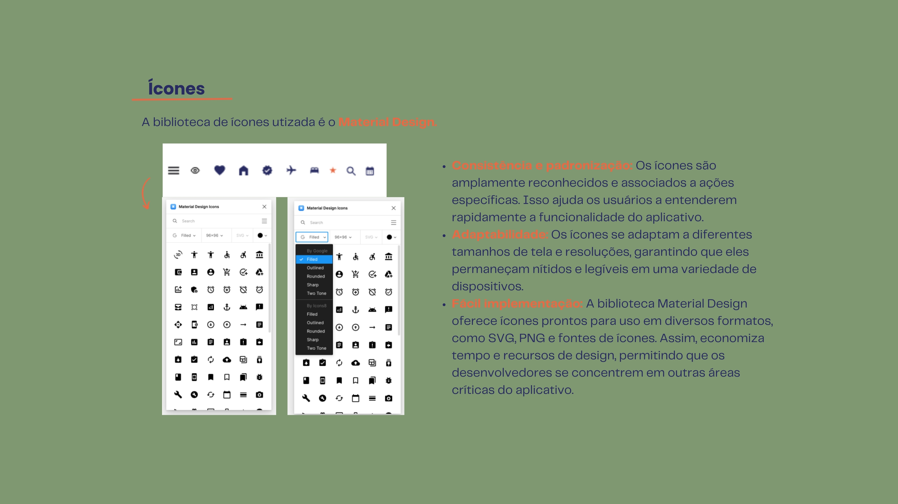
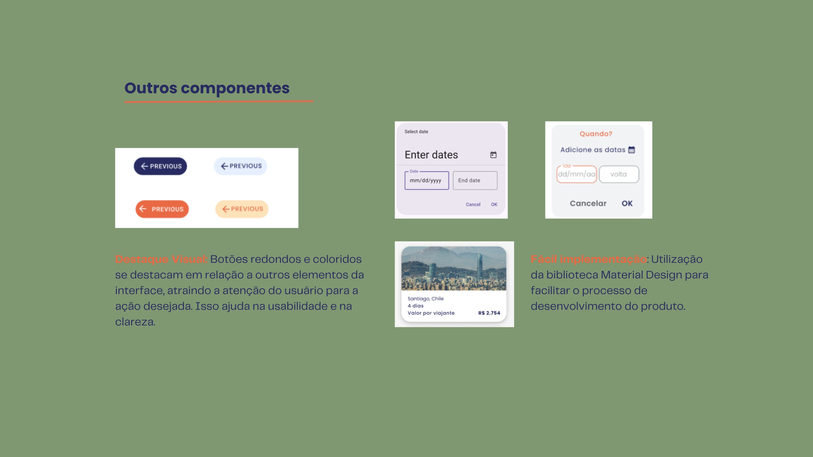
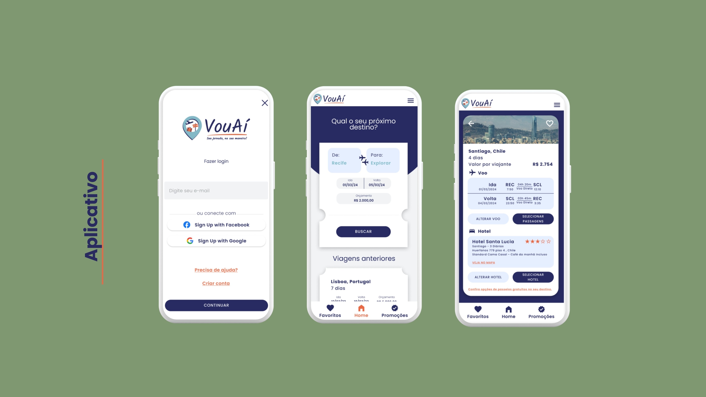

VouAí
A proposta do aplicativo é facilitar a experiência de busca por pacotes de viagens, tendo como foco o orçamento do usuário. Ao indicar o período da viagem e orçamento disponível, são geradas opções de combinações de voo + hospedagem com valores próximos ao indicado no momento da pesquisa e, ao escolher o pacote ideal, a pessoa é redirecionada para o site parceiro.







Molestiae cupiditate inventore animi, maxime sapiente optio, illo est nemo veritatis repellat sunt doloribus nesciunt! Minima laborum magni reiciendis qui voluptate quisquam voluptatem soluta illo eum ullam incidunt rem assumenda eveniet eaque sequi deleniti tenetur dolore amet fugit perspiciatis ipsa, odit. Nesciunt dolor minima esse vero ut ea, repudiandae suscipit!
#2. Creative WordPress Themes
Temporibus ad error suscipit exercitationem hic molestiae totam obcaecati rerum, eius aut, in. Exercitationem atque quidem tempora maiores ex architecto voluptatum aut officia doloremque. Error dolore voluptas, omnis molestias odio dignissimos culpa ex earum nisi consequatur quos odit quasi repellat qui officiis reiciendis incidunt hic non? Debitis commodi aut, adipisci.